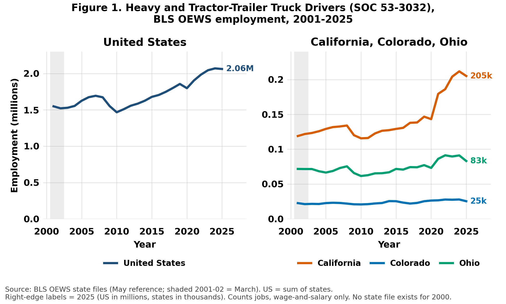
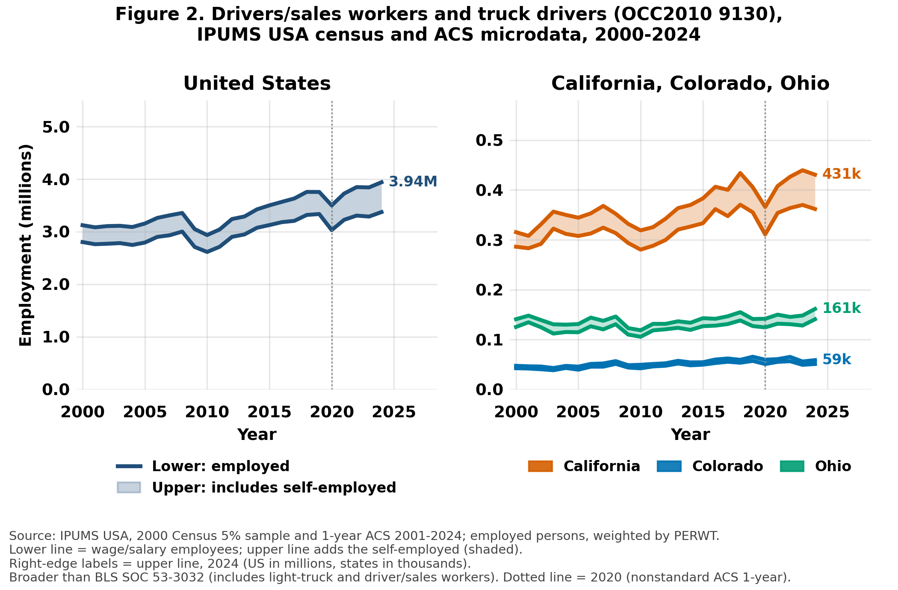
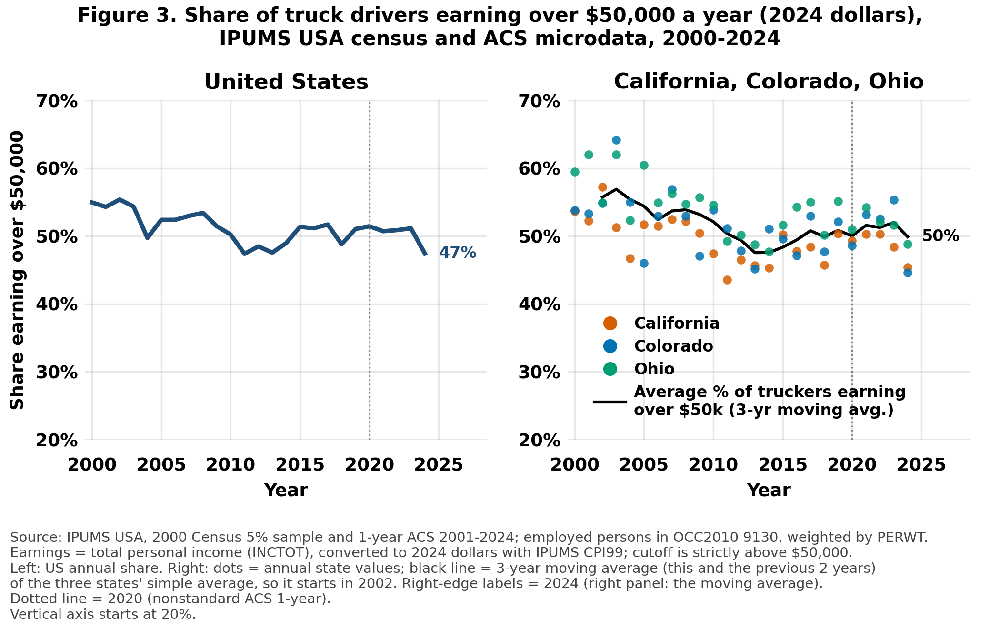
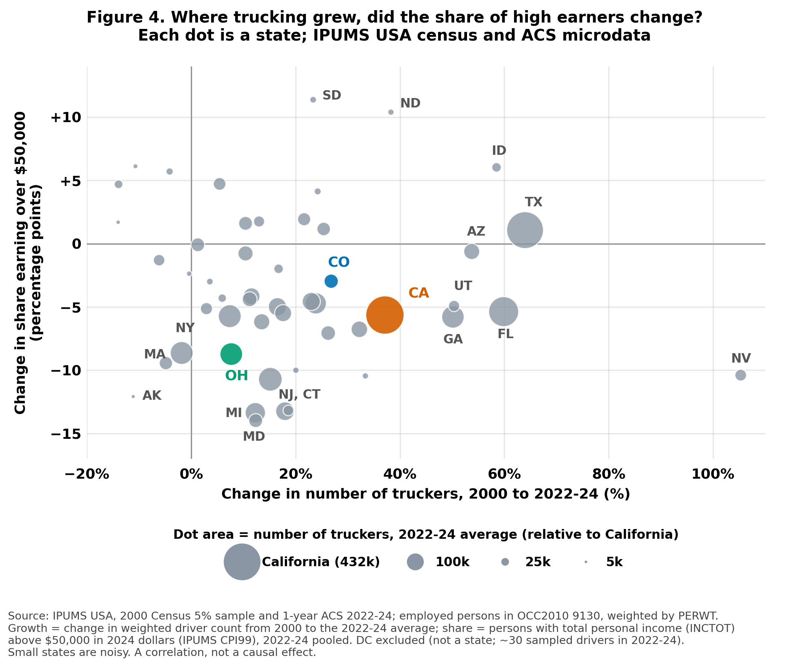
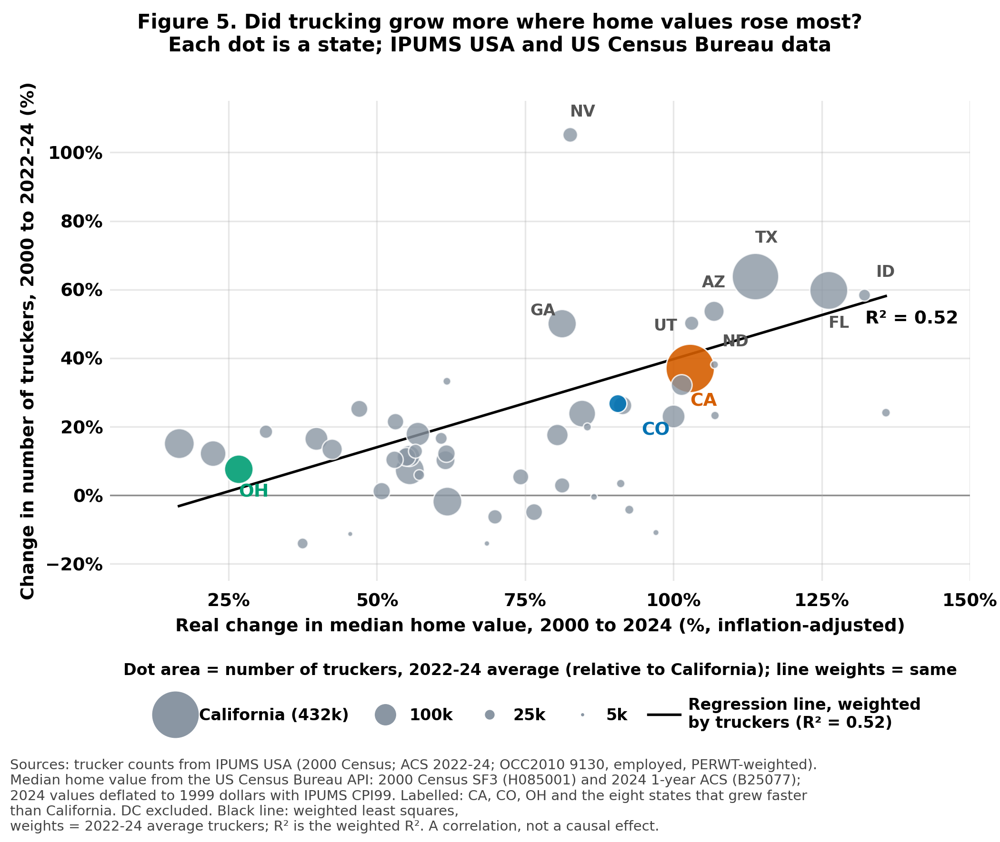
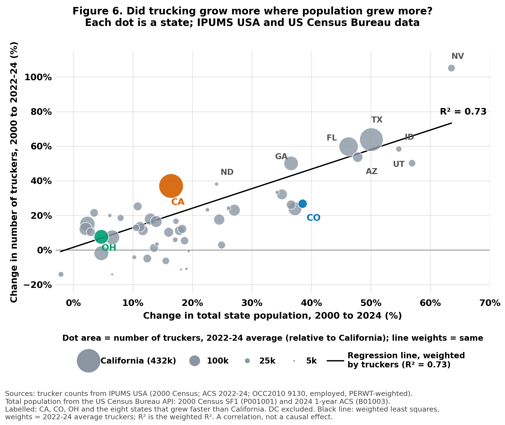

Colorado has roughly 25,000 to 28,000 heavy-truck driver jobs (BLS) and about 59,000 people in the broader census “truck driver” category. The “quarter-million jobs” claim matches California’s broad trucking counts, not Colorado’s. About 28% of Colorado drivers are 55 or older, so 5,000 to 8,000 heavy-truck drivers will retire within a decade regardless of this bill. Nationally, trucking employment has grown with population, while the share of drivers earning over $50,000 (2024 dollars) fell from 55% to 47%.
HB26-1286 prohibits for five years using an automated driving system to drive a commercial vehicle over 26,000 pounds on a Colorado highway unless a commercial driver's license (CDL) holder is physically present in the vehicle, monitoring it, and able to intervene. The Colorado legislature passed HB26-1286 in May 2026. Governor Jared Polis vetoed the bill on May 28, 2026. In his veto letter he argued that “driver error is the leading cause of accidents.” He also said he had offered a compromise that the sponsors rejected: require a licensed operator only in vehicles carrying hazardous materials, in oversize/overweight vehicles, and in school buses, and give the Colorado Department of Transportation (CDOT) the power to authorize driverless trucks and revoke that authorization.
California's legislature passed similar bills twice, and Governor Newsom vetoed both. In 2026 California's DMV opened its roads to driverless heavy trucks, and the Teamsters sued. Texas since the passage of SB2205 in 2017 has allowed the operation and testing of driverless trucks. The leading private sector developer of autonomous trucking technology, Aurora Innovation, launched America’s first driverless Class 8 commercial trucking delivery service between Dallas and Houston on May 2025. Six months later it launched a second driverless route from Fort Worth to El Paso.
BLS counts jobs held by wage-and-salary Heavy and Tractor-Trailer Truck Drivers (SOC 53-3032). All series fell in the 2009–10 recession.

The census and ACS count employed people whose main job is coded OCC2010 9130, “driver/sales workers and truck drivers.”

Table 1. How BLS and the ACS count truckers
| BLS OEWS | IPUMS census/ACS | |
|---|---|---|
| Unit | Jobs at surveyed establishments (two jobs count twice) | People, by main job |
| Who | Wage-and-salary employees only | Employees and the self-employed (14% in 2024) |
| Occupation | SOC 53-3032 heavy and tractor-trailer, coded from employer job titles | OCC2010 9130: driver/sales, heavy and light truck pooled, self-reported |
| US 2024 | 2,070,390 | 3,373,951 employees; 3,941,222 incl. self-employed |
The ACS count is 1.6 times BLS’s nationally and 1.8 times in Colorado. Only 45% of ACS drivers work in the trucking industry; the rest deliver for retailers, wholesalers or construction firms. HB26-1286 covers vehicles over 26,000 lb, which are heavy trucks, so BLS SOC 53-3032 is more appropriate: its occupation matches the covered vehicles and its unit, a job, is what a driverless truck would remove. BLS misses owner-operators (13% of Colorado ACS drivers) and has no age or earnings detail.
Inflation adjustment. Convert each person’s total personal income (which includes self-employment income) to 2024 dollars with the IPUMS CPI99 factor (1.000 in 2000, 0.531 in 2024): income in 2024 dollars = income × CPI99 (survey year) ÷ 0.531.


Hypothesis 1: trucking correlated with housing demand. Figure 5 plots trucker growth against the real change in median home value, 2000–2024. The relationship is positive (r = 0.47; weighted R² = 0.52).

Hypothesis 2: trucking correlated with population growth. Figure 6 shows a stronger relationship (r = 0.80; weighted R² = 0.73; slope 1.1).

Home values and population growth are indicative of state-level growth. Correlation may not imply causation in this case.
Claim: after Governor Newsom vetoed AB 316 in September 2023, with no method given.
Found in: BLS heavy-truck drivers (211,740 in May 2024) and heavy plus driver/sales workers (246,960). AB 316 covered vehicles over 10,000 lb, so broader counts fit too: heavy plus light-truck drivers is 328,990 and ACS employee drivers 365,000.
Table 2. Colorado workers by definition of a trucker, and those aged 55 or older
| Definition | Workers | Aged 55+ | Share 55+ |
|---|---|---|---|
| All drivers incl. self-employed (ACS 9130, 2022–24 avg.) | 60,000 | 16,900 | 28% |
| Employee drivers only (ACS) | 52,300 | 14,700 | 28% |
| All BLS truck-driver occupations (53-3031/32/33, 2024) | 52,400 | 14,800 | 28% |
| Heavy/tractor-trailer only (BLS 53-3032; 25,350 in 2025) | 27,840 | 7,800 | 28% |
| Long-haul proxy: ACS drivers in for-hire trucking industry | 23,400 | 7,200 | 31% |
Workers = ceiling on jobs at risk (every driver replaced, no adoption timeline). Aged 55+ = workers × ACS age share. Source: BLS OEWS May 2024; IPUMS USA ACS 2022–24; script 15.
Most credible: BLS heavy-truck count (25,000 to 28,000), matches the bill’s over-26,000 lb vehicles; the broader counts include delivery and light-truck drivers the bill does not touch. Owner-operators are excluded.
Retirements. About 28% of Colorado drivers are 55 or older (19% are 60 or older). Full replacement would be 3.5 to 5 times that, so retirement alone would absorb the loss only if adoption is gradual.
Sources. BLS OEWS state files 2001–2024 and BLS API (May 2025), SOC 53-3032; IPUMS USA 2000 Census 5% sample and ACS 1-year 2001–2024 (OCC2010 9130, employed, PERWT-weighted); US Census Bureau API (2000 SF1/SF3 and 2024 ACS 1-year: population, median home value); BLS OEWS May 2024 for Step 6.
Assumptions. The late period is 2022–24 pooled; DC is excluded from state scatterplots; earnings are total personal income deflated with CPI99; age 55+ stands in for retiring within a decade; the BLS heavy-truck count is the base for jobs at risk.
How I used Claude Code. Followed steps from canvas. Lots of iteration over the graphs initially generated. Generally needed a lot of iteration to home in on something incisive. Had to do a few checks to find two variables that were relevant for question 5. Data through the BLS, IPUMS and Census APIs.
What I checked. The BLS national figure against the sum of state values (within 10 jobs). A first trucking-industry count came out near zero because of a wrong industry code (421); it was corrected to 410, which reproduces the 45% industry share. Figures and tables are reproduced by the scripts in the replication folder.
Figure 1. BLS OEWS employment of Heavy and Tractor-Trailer Truck Drivers (SOC 53-3032), United States, California, Colorado and Ohio, 2001–2025. Source: BLS Occupational Employment and Wage Statistics annual state files (2001–2024) and BLS API (May 2025). Data: output/bls_fig1_data.csv. Scripts: 01, 02, 03, 07.
Figure 2. Employed drivers/sales workers and truck drivers (OCC2010 9130), 2000–2024; lower line = wage-and-salary employees, upper line adds the self-employed. Source: IPUMS USA, 2000 Census 5% sample and 1-year ACS 2001–2024. Data: output/acs_fig2_data.csv. Scripts: 04, 04b, 05, 06, 07.
Figure 3. Share of employed truck drivers (OCC2010 9130) earning over $50,000 (2024 dollars), 2000–2024; dots are annual state values and the black line is a 3-year moving average of the three states. Source: IPUMS USA, 2000 Census 5% sample and 1-year ACS 2001–2024; total personal income deflated with IPUMS CPI99. Data: output/earnings_share_fig3_data.csv, output/earnings_share_fig3b_avg.csv. Script: 08.
Figure 4. Growth in the number of truckers, 2000 to 2022–24, against the change in the share earning over $50,000 (2024 dollars), by state; dot area = number of truckers; DC excluded. Source: IPUMS USA. Data: output/state_change_scatter_data.csv. Scripts: 08, 09, 09b.
Figure 5. Growth in the number of truckers, 2000 to 2022–24, against the real change in median home value, 2000–2024, by state; weighted regression line. Sources: IPUMS USA; US Census Bureau (2000 Census SF3 H085001; 2024 1-year ACS B25077); values deflated with IPUMS CPI99. Data: output/step5_housing_scatter_data.csv, output/census_housing_state.csv. Scripts: 10, 11.
Figure 6. Growth in the number of truckers, 2000 to 2022–24, against the change in total state population, 2000–2024, by state; weighted regression line. Sources: IPUMS USA; US Census Bureau (2000 Census SF1 P001001; 2024 1-year ACS B01003). Data: output/step5_population_scatter_data.csv, output/census_population_state.csv. Scripts: 13, 14.